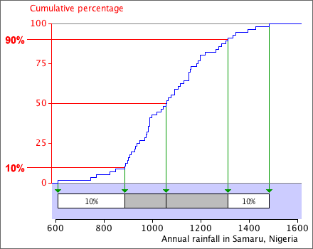

If you don't want to print now,
Annual rainfall in Samaru, Nigeria
In most of Africa, the most important climatic variable is rainfall. Rainfall is usually highly seasonal and failure of crops is normally associated with late arrival of rain or low rainfall. A better understanding of the distribution of rainfall can affect the crops that are grown and when they are planted.
The annual rainfall (in mm) in Samaru, Northern Nigeria between 1928 and 1983 will be used as an example in this section.
Cumulative proportions
The proportion of values in the data set that are less than or equal to any value, x, is called its cumulative proportion.
For the median and quartiles, the cumulative proportions are:
| Value | Proportion below |
|---|---|
| Lower quartile | 0.25 |
| Median | 0.5 |
| Upper quartile | 0.75 |
The proportion of values greater than x is one minus its cumulative proportion,
Pr(values > x) = 1 - Pr(values <= x)
Equality
For continuous data, we do not need to distinguish between the proportion of values less than x and the proportion that are less than or equal to x. Provided the values are recorded accurately enough,
However for discrete data (counts) it is important to distinguish the terms 'less than' and 'less than or equal to'.
Cumulative distribution function
The cumulative proportion of values less than or equal to x can be found for any x. They can be shown together in a single graph of the cumulative proportion against x. This is called the cumulative distribution function of the variable.

The cumulative distribution function for a data set with n values is a step function that rises from 0.0 below the minimum x-value to 1.0 at the maximum x in the data. It increases by 1/n at each value in the data set.
Finding percentiles
Given any proportion, p, between 0 and 1, we can find a value x such that approximately this proportion, p, of values is x or lower in our data set. This is called the p'th quantile in the data set. When p is given as a percentage, the same value is called the p'th percentile.
The p'th percentile is the value x such that p percent of the data set are x or lower.
Percentiles can be read from a graph of the cumulative distribution function.

Details (optional)
It may not be possible to find a value, x, such that exactly p percent of the data are lower, expecially if the sample size is not a multiple of 100. If n = 56, the cumulative distribution function is a step function that rises by 1/56 at each data value, so it is impossible to find an x-value for which exactly say 43% of values are lower.
There is no universally accepted general definition of percentiles and different statistical programs give slightly different values. The differences are minor and should not affect your interpretation of the data.
25, 50 and 75% percentiles
The 50th percentile is the median and the 25th and 75th percentiles are the lower and upper quartiles. A box plot therefore shows these percentiles.

Displaying other percentiles
For some data sets, other percentiles are more important than the 25th and 75th ones. A similar 'box' can be used to graphically display any other percentiles. It is best to alter the way the box is drawn to avoid confusion with the standard box plot.

Joined-up quartiles
Box plots are an effective way to compare the distributions of different groups of values. When the groups are ordered, an alternative to the conventional display of the box plots is to join up the medians, quartiles and extremes of the groups in shaded bands.

Joined-up percentiles
A similar display can be used with other percentiles.

Different definitions of percentiles
It was mentioned earlier that there are several competing definitions of the upper and lower quartile. All such definitions split the data approximately into quarters but there is not a unique way to do this.
There is even less agreement about the precise definition of other percentiles, and different computer software finds them in different ways. The definitions are usually based on a smoothed version of the cumulative distribution function.

The differences between the different definitions are small if the data set is large.
If your conclusion about the data would change with a different definition of the percentiles, you are over-interpreting the data.